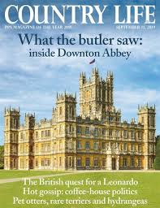
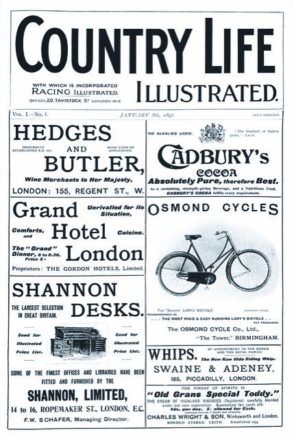
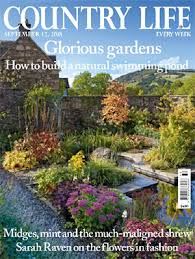
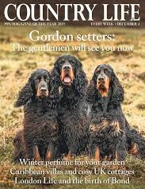
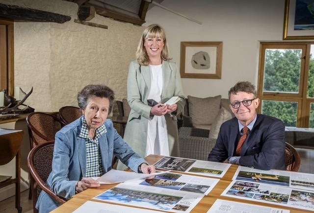
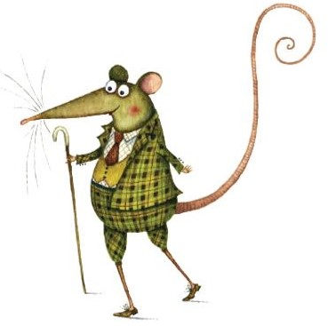
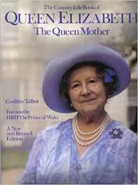
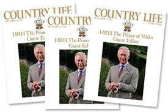
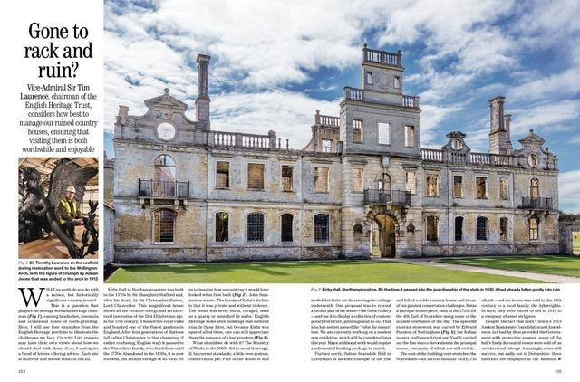
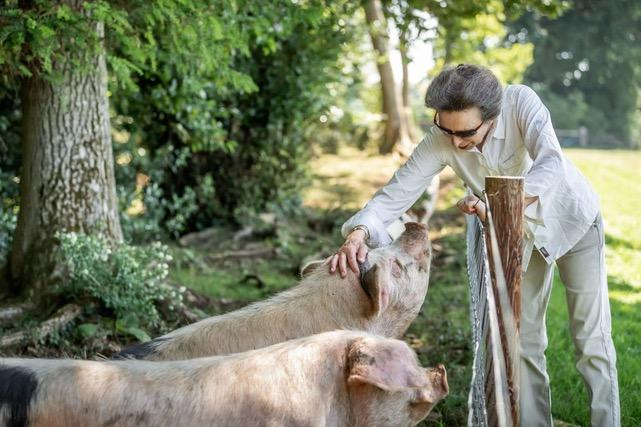

By Lucia Adams
“The country habit has me by the heart”.
Vita Sackville-West
Country Life, the British weekly magazine founded in 1897 for the golf and racing set, has always had its Wellies planted firmly on the soil of the shires. Originally called Country Life Illustrated, ‘A journal for all interested in country life and country pursuits” it was the brainchild of one Edward Hudson, a canny printer (from London!). The instant success of the advertising -intensive publication enabled him to buy the Arts and Crafts Lindisfarne Castle and other Lutyens houses, Deanery Gardens and Plumpton Place and for the next 123 years it beguiled the real -or imagined- land owning classes hankering for a pre-Industrial England.

A typical issue, and the only one in my possession, dated October 7, 1965, ironically dating from the Harold Wilson years and gracing my coffee table ever since, is about halfway to city- weary 2020. Printed on posh glossy stock with a russeted cover of the heavily moated Scotney Castle in Kent, it features 35 pages of Select Property listings for sale including Bigges Field in Cuckfield, “A delightful period farmhouse dating from the XIIIth Century”. Thereafter are 12 pages of advertisements, Sotheby’s important English silver, Spinks, Christie’s, Mallett’s, Richard Green preceding the usual full page Frontispiece photograph of the affianced Miss Marilla Hall Hall younger daughter of Major O.B. Hall Hall of Chumleigh, Devon.

The editorial page, a full 60 years ago, ponders wildlife “in the balance” discussing the World Wildlife Fund’s conference about the Disappearing Whale. Ian Niall then offers an appreciation of his favorite pile (and mine too!!) Hardwick Hall in Derbyshire preceding several scholarly articles — paintings of the Early Sackvilles, the origins of Greenwich Park, 19th century steamworks in the Fens. Detailed listings of upcoming auctions and yearling sales abound before another swath of advertisements, a Porsche 912, Audubon prints, golf, candelabra, Longine watches and ladies’ tweeds.

It was architecture that gave Country Life its enduring prestige and allure. In the 1880s Gladstone predicted that country houses would be dust one hundred years hence but not if Country Life could help it. It has always published learned articles about houses in the countryside, stately homes, manorial dwellings, historical buildings,with detailed descriptions of exteriors and interiors. In addition accoutrements to a pukkah rustic life have been regular features from fine art, society and equestrian news, dog breeding, birding, hunting, shooting, fishing to — gardens! Always gardens. The most celebrated gardener of modern times, Gertrude Jekyll, whose floral handiwork graced Lindisfarne, was the first of many columnists of flora and fauna.

Predating today’s cult following for the country house, there is a vast archive documenting the built heritage of Britain, often the only source for the restoration of early 20th-fine buildings. A standard reference for builders, renovators and architectural historians Country Life has owed much of its success over the decades to its scholarly well- researched documentation. In more recent decades its most notable editor with the zeal of a crusader, Clive Aslet, author of countless books and articles on country houses, expanded its circulation enormously. Still on the editorial board he was replaced in 2006 by Mark Hedges (such a fitting surname) who has tried to democratize the mission by “fighting the case for upland farmers earning £10,000 a year.” since after all, “This is not just about an elite.” We are not entirely convinced since Country Life still posseses a High Tory, Establishment ethos.

Princess Anne and Mark Hedges.
It is nearly impossible for Americans to understand this love of the rural ideal since “country life” conjures up farmers on combine reapers on the yellow fields of the Great Plains. Interest in the culture of the countryside is however at an all-time high in England and circulation numbers for the magazine are soaring though in 2020 fewer people live and work on the land. Millions are now more than ever enthralled by the bucolic life. The BBC’s Countryfile is the most watched program on TV , the National Trust the second-biggest membership organisation in the country and walking, we always called it rambling, the most popular pastime. Hedges, The Country Mouse, revels in the rusticized details of what seems like an arcane religion calling for Restrained Verge Trimming, “the last bastions for many of our rarest wildflowers as well as more common varieties such as the campion, foxglove and cow parsley”.

Royalty has always had a starring role in the romance of the country since Victoria and Albert bought Balmoral and Sandringham making getting out of London fashionable.. The Windsors, those living symbols of Another World, (I’ll take it, thank you) have been featured from Edward, George and Mary to Miss Elizabeth Bowes-Lyon, who as a debutante then Queen appeared frequently on the cover.

Prince Charles guest-edited an issue in 2013, on his 70th birthday; he, his country estate Highgrove and model village Poundsbury represent the archetype, the purest form, of the country gentleman, still very much in evidence in Wiltshire, Gloucestershire and Worcestershire. On a recent visit to Cumbria he lamented with all of us the decline of the ancient Herdwick sheep and gradual dimishing of rural traditions, communities, natural environments. I have admired his efforts over the years defending him in articles when attacked for being an architectural reactionary and plant whisperer:
“The fact that he chooses to live the life of an enlightened 18th century country gentleman is not merely an anthropological curiosity but actually has some urgent importance. By espousing organic farming, and questioning the safety of genetically engineered crops, or those ‘advanced’ farming methods which created hoof and mouth, then mad cow disease, by cross-species breeding, he has exhibited some courage.”

There was a special commemorative issue of Country Life in June 2016 celebrating the Queen’s 90th birthday and an issue this July was guest edited by Princess Anne on the occasion of her 70th. She reveals things she holds dear attributing her love of country to her parents, thus Scotland figures prominently as does her home and farm the 500 acre estate, Gatscome Park, Gloucs. with its organic farming of rare birds. She shares her favorite recipe, Devilled Pheasant ,( her brother’s was Pheasant Crumble Pie), and her list of Rural Champions from gamekeepers and fish wardens to the Duke of Buccleuch, a celebration of sheepdogs and a segment written by her husband Admiral Sir Tim Laurence chairman of the English Heritage Trust currently involved in saving the ruins of one Kirby Hall.

Sir Roy Strong in his centenary history of Country Life in 1997 captures the essence of the beau ideal, ‘The magazine still stands for the civilised person in the old sense of the word, someone as much at home working in the garden as seeing an art exhibition, as fascinated by the nesting habits of birds as the restoration of a state bed, as concerned about pollution as much as who will win the Boat Race.’ How astonishing such a rara avis still exists, if it does.
